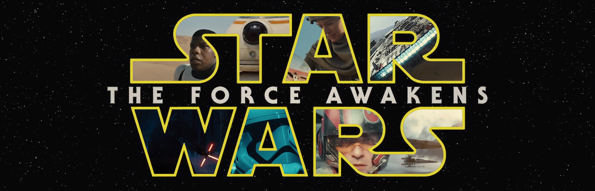
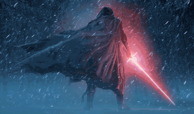

Yılın en çok gişe yapması beklenen filmlerinin vizyona girdiği yılbaşı tatilinde izleme şansı bulunan, Star Wars serisinin 7. filmi The Force Awakens (Güç Uyanıyor) adını taşıyor.
Öncelikle belirtmek isterim film güzeldi. Hele imax®’de 3 boyutlu olarak izlendiğinde etkileyici ve keyif verici. Önceki filmlerden farklı yeni bir seri başlıyor bu filmle, ilk üç filmin sıcaklığı, sevecenliği sonraki hiçbir filmde olmamıştı zaten, bu filmde de yok maalesef. Eski filmlere takılmadan, fazla sorgulamadan izlendiğinde gayet keyifli bir bilim kurgu. Bununla birlikte naçizane eleştirilerim şu şekilde sıralanıyor;
- J. J. Abrams’ı hiç sevmedim, sevemedim. Tempoyu kaybetmemek için oradan oraya koşturma sahneleri ile doldurmuştur hep filmlerini, dizilerini… Değişik gizemler yaratır, sosyal medyada bu gizemlerin konuşulmasını sağlar, sonrada hiçbirini aydınlatmadan, sonlandırır herşeyi. Yeni Star Wars serisi de büyük ihtimalle bu şekilde devam edecek. Neyseki tempoyu kaybetmeme amaçlı saçma koşturmacalar gözüme batmadı bu filmde.

- Dark Side denildiğinde, akan sular dururdu zamanında. Karizmatik, güçlü ve bilge olurdu karanlık tarafı seçenler. Karakterin başından geçen olaylar, yaşadıkları onu karanlık tarafa sürüklerdi. Anlayışla karşılardık bu durumu. Bu filmdeki Kylo Ren bayağı bir hafif kalmış, olmamış. (Kendisi bir Sith Lordu değil tabi) Ergenligine vermek lazım, bizde o yaşlarda kendimize bir rol model seçer, ona benzemeye çalışırdık, o da “Darth Vader’ı seçmiş, maskeyle falan dolaşıp eğleniyor genç!..” deyip geçmek lazım, çok takılmamalı.
- Carrie Fisher ve Harrison Ford’un filme yaptığı katkı çok büyük. Filmin en keyifli bölümleri onların olduğu bölümler oldu benim için. Karşılaştıkları sahne fazlasıyla duygulandırdı beni.
- Senaryo zayıf, yeni bir Death Star (Starkiller Base) hurdacılar, kaçakçılar vb… Bu filmde yaratılan gizemlerin çözülmesini bekleyenler çok bekler, çoğunluğu çözülmeyecek ve cevapsız kalacak.
Ama bütün bunlara takılmadan izlendiginde gayet keyifli ve eglenceli bir bilim kurgu.
İzle geç kardeşim fazla takılma, düşünme, kafa yorma üstünde. Bir-iki Star Wars oyuncağı al, arkadaşlarınla goygoy çevir, 2 hafta sonra unut gitsin, seneye yeni bölüm gelecek nasılsa.